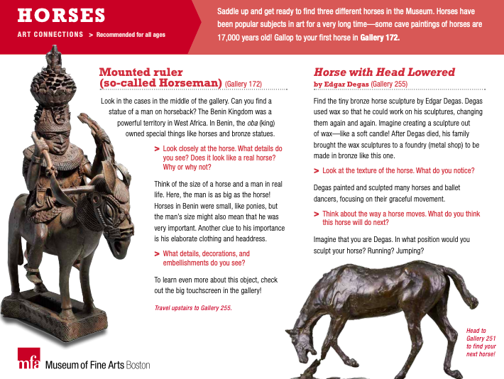
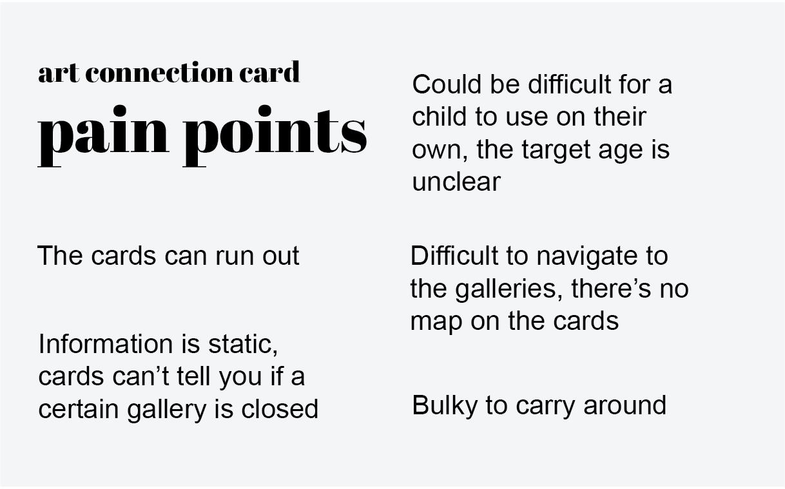
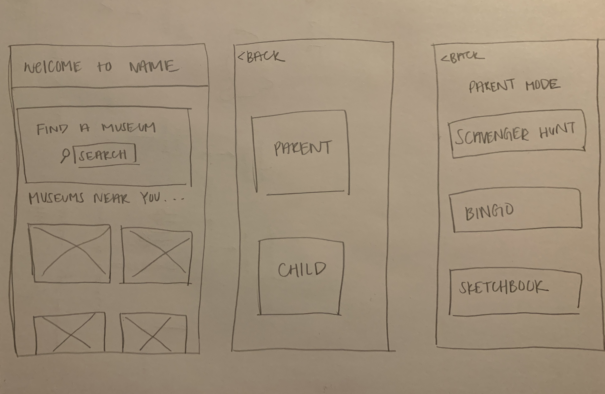
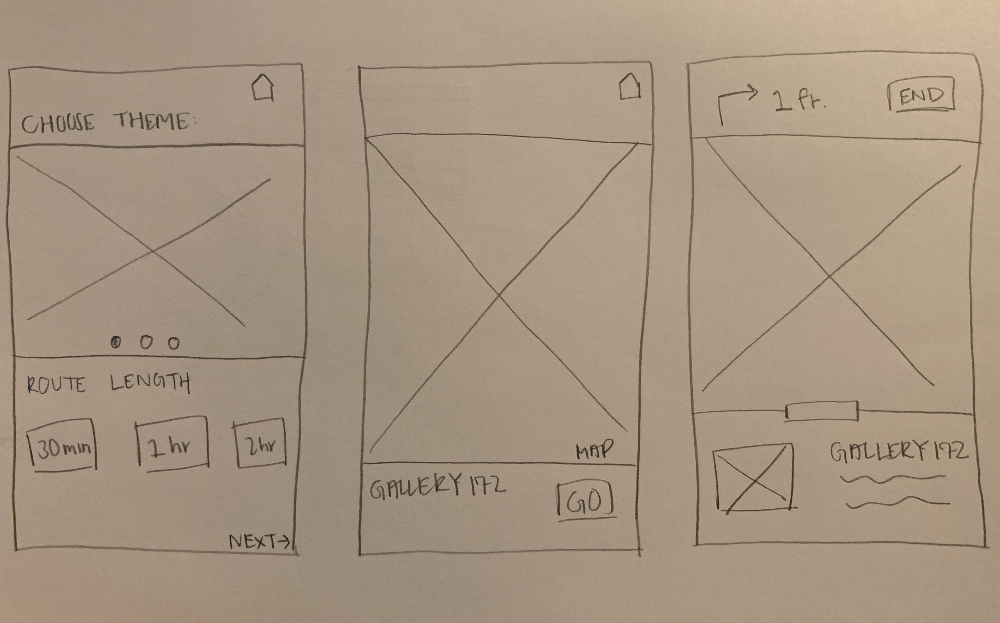
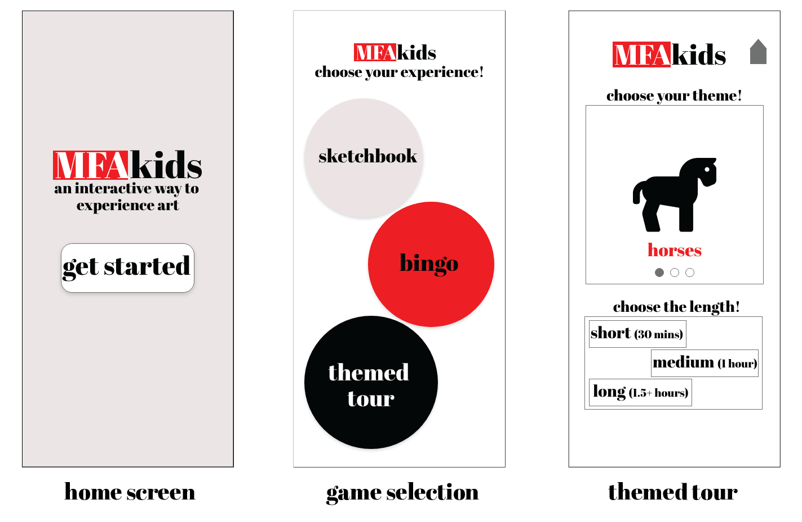
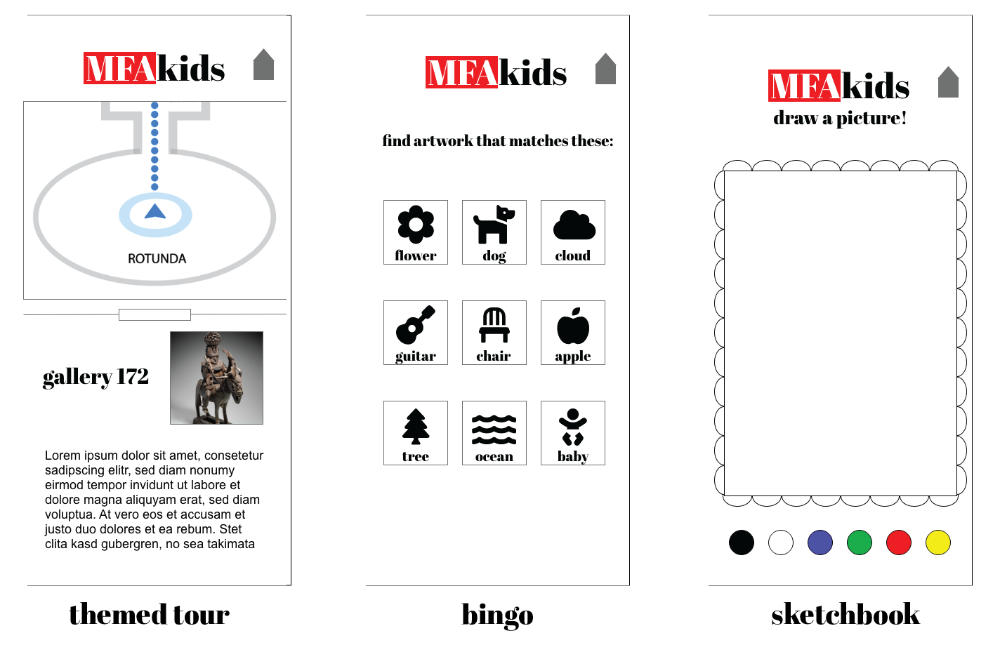
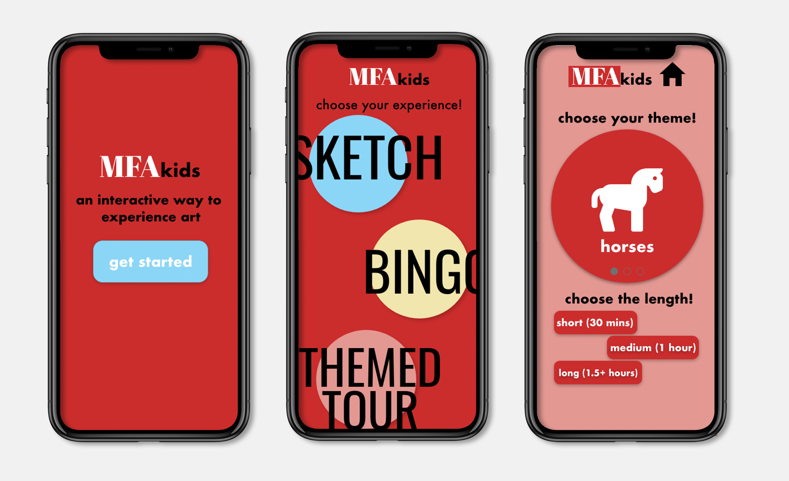
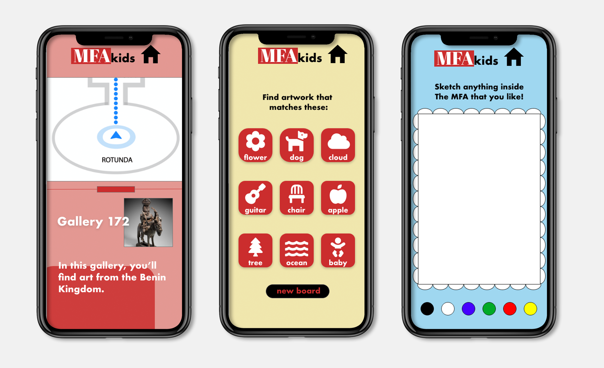

MFAkids
Class Interaction Design 1 Tools Pen & paper, Adobe XD
Overview
The goal of this assignment was to create a digital solution to a pain point
encountered while doing a task of our choosing. My group (two teammates) and I decided on
the task of visiting an art museum.
MFAkids is an app designed for children visiting the Museum of Fine Arts (MFA) in Boston.
There are different games and features providing a fun, interactive way to experience art.
Research
After choosing our task, we started our research by going to the MFA to experience it ourselves.
While we were there, we noticed many resources available for children and families. We thought
it would be fun to use these resources as a guide to experience the museum. We were particularly
interested in their "art connection cards" which are themed, scavenger hunt-like activities:

We used this card to guide our museum visit and noted our observations and pain points along the way:

Concept + initial sketches
The idea for our project was to take the concept of the Art Connection Cards as well as the MFA's other
existing resources for children and consolidate them into an interactive app. The app was originally
intended to be usable at any art museum. This would be distributed to visitors on tablets, similar to
how audioguides are available. We started envisioning this by sketching (very) low-fidelity wireframes:


We reviewed these wireframes with our classmates. After getting their feedback, we decided
to make the app MFA-specific and to have only one setting, rather than a parent and a child mode.
We revised these wireframes and made them digital:


User testing
We then used our digital prototype for user testing. Using Adobe XD, we had participants
try to navigate the app and accomplish given tasks.
We made sure to test on our target audience by asking parents with young children as well as a group of kids on a field trip at the MFA. The main concerns expressed were related to making the appearance
more colorful/playful/child-like, focusing on visuals rather than having text-heavy screens, and making navigational cues clearer.
Final prototype
After making edits based on user testing feedback, we created our final prototype.
A clickable version can be found here.

